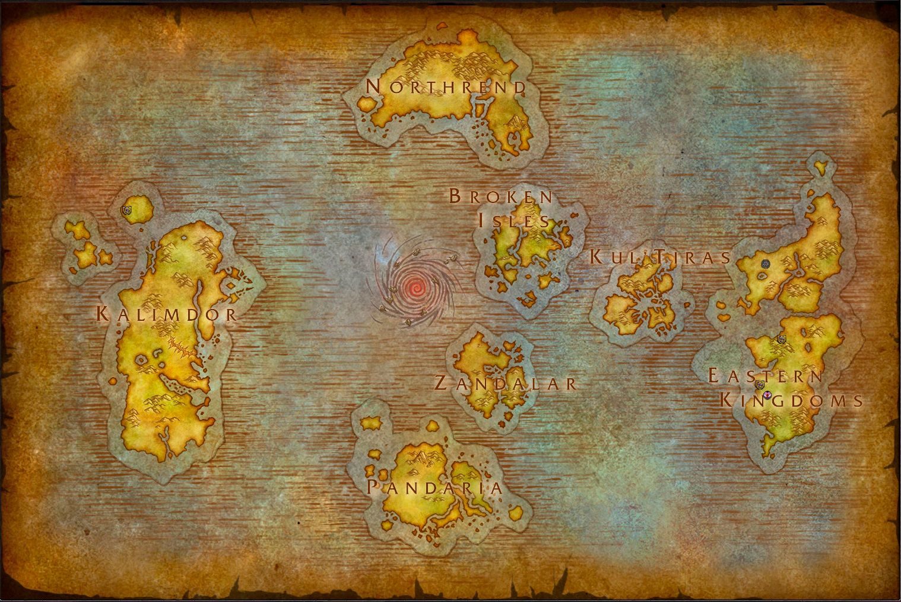

Senhora Sylvanas Correventos, também conhecida como “A Dama Sombria” e
“Rainha
Banshee”, é a formadora e líder suprema dos Renegados, uma das mais poderosas facções de
mortos-vivos de Azeroth.
Ainda viva, Sylvanas foi a general-patrulheira de Luaprata, uma comandante encarregada de
defender o reino dos elfos de Quel’thalas, que liderou com tamanha maestria que ninguém
nunca se
equiparou a ela.
Durante a Terceira Guerra Sylvanas defendeu bravamente Quel’Thalas da
invasão do
Flagelo, que foi liderado pelo grande cavaleiro da morte Arthas Menethil. Entretanto
Sylvanas
caiu na batalha, e em vez de receber uma morte honrosa e rápida Arthas rasgou e capturou a
sua
alma e a transformou em uma Banshee: uma agente vingativa do Lich Rei motivada a vingança. E
ganhou uma nova aparência, muito mais fantasmagórica que a antiga e sua pele marcada para
sempre
com as cicatrizes de suas lágrimas.
Sylvanas estava sendo controlada pelo Lich Rei por muitos anos, até que em
um
momento o controle dele pelos seus lacaios enfraqueceu e Sylvanas quebrou a sua ligação
psíquica
e reivindicou o poder sobre seu próprio corpo novamente jurando vingança pela sua morte.
Sylvanas ajudou e libertou outros Renegados mortos-vivos e começou uma grande guerra contra
o
Flagelo. E foi assim que nasceram os Renegados, com Sylvanas como a sua rainha.
Posteriormente os Renegados se juntaram a Horda, e posteriormente a uma invasão a Coroa de
Gelo(lar do Lich Rei) acabaram o derrotando-o, ela busca uma propósito maior para as pessoas
que
morreram uma vez.
Após sua morte Sylvanas mudou muito o seu comportamento, antes a patrulheira
era
100% dedicada a sua terra e seu povo, e agora ela se tornou muito mais ‘misteriosa’ que
antes,
as suas intenções sempre acabam deixando até mesmo os seus aliados confusos com suas ações.
Após a queda e morte do Lich Rei, Sylvanas percebeu a realidade chocante que ela, como
Arthas
antes dela, estava condenada a eternidade de escuridão e tortura da pós vida. E também ela
encontrou outro propósito para vida quando encontrou o grande mal controlando esse reino,
uma
entidade conhecida como o Carcereiro e formou uma aliança com ele.
E pouco tempo depois ela afirmou um pacto com as Val’kyr, um povo que possui
a
capacidade de ressureição. Assim garantindo seu lugar no reino dos vivos.
Sylvanas fez um acordo com o Carcereiro, em troca de poder ela concederia a ele novas almas,
por
conta disso ela precisava criar a maior quantidade de guerras possíveis para entregar almas
para
o seu novo aliado. Para isso ela lançou sequencialmente vários ataques agressivos em regiões
de
Lordaeron e os Reinos do Leste.
Durante a batalha na Costa Partida contra a Legião Ardente o chefe guerreiro
da
Horda Vol’jin, declarou Sylvanas como o seu sucessor, após o seu suspiro final minutos
depois.
Sylvanas ficou durante muito tempo as sombras enquanto a Horda lutava contra a Legião
Ardente e
seu gigante exército. Após a vitória contra a Legião Sylvanas declarou guerra contra a
Aliança,
rompendo o acordo de paz.
Entre esses ataques o mais efetivo foi o ataque a árvore da vida, onde vive
os
Elfos Noturnos, Sylvanas queimou e matou a árvore, junto com toda a população que vivia
nela,
gerando muito ódio em seus inimigos e até mesmo nos outros comandantes da Horda.
Posteriormente o grande guerreiro Varok Saurfang descontente das ações da
dama
sombria a chamou para um duelo até a morte, chamado de “Mak’Gora”, Durante o combate
Sylvanas
com ajuda do poder concedido a ela pelo Carcereiro acabou vencendo Varok sem dificuldades,
porém
durante o duelo a dama sombria deixou escapar que não se importava com a Horda e assim
fazendo
toda a facção se virar contra ela.
Sozinha Sylvanas invadiu a antiga casa do Lich Rei, a Coroa de Gelo e lutou
contra o novo portador do elmo da Danação, após uma luta totalmente articulada por ela,
Sylvanas
consegue imobilizar o novo Lich Rei Bolvar Fordragon e retirar o elmo que lhe fez tão mal
dele.
Bolvar pensava que ela iria colocar o elmo e virar a nova comandante do Flagelo, porém ela
fez o
inesperável e quebrou o elmo ao meio, o que ninguém sabia era que o elmo na verdade era o
portão
para o reino do mortos, a Terra das Sombras, e com isso quebrando o motor da vida e da
morte.’
